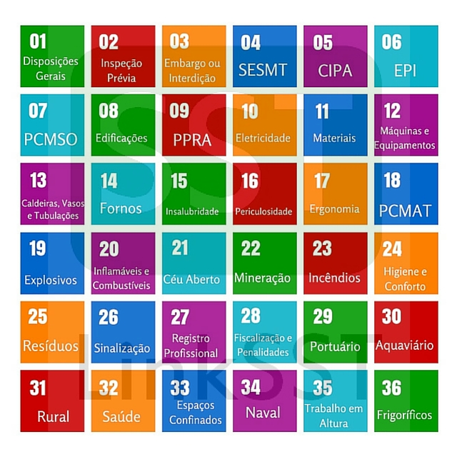

O que são as NRs e como elas são necessárias para proteger você e a natureza no transporte de combustíveis.
Regras rigorosas protegem os trabalhadores, o meio-ambiente e a sociedade.
O transporte de combustíveis assume uma importante função na cadeia de suprimentos do Brasil, garantindo que todos os veículos estejam em constante movimento, e consequentemente se tornando em uma das engrenagens da economia brasileira. No entanto, caso o procedimento não siga as normas impostas para esta prática, esse transporte pode ser muito danoso para a saúde das pessoas e da natureza. Essas normas são conhecidas como NRs.
As Normas Regulamentadoras (NRs), são regulamentações criadas com intuito de garantir a segurança, o bem-estar e a saúde dos trabalhadores em todos os setores, foram criadas e são fiscalizadas pelo Ministério da Economia do Brasil. Para o presente tema, se destacam:
NR 6 - Equipamentos de Proteção Individual: Segurança e saúde no trabalho: Esta norma regulamentadora está associada ao uso do Equipamento de Proteção Individual, popularmente conhecido como EPI, esta NR aborda a importância do uso do equipamento adequado, e como ele pode salvar a vida de um trabalhador. Ela define as responsabilidades do empregador e dos empregados acerca dos aparelhos de proteção pessoal, como sua conservação, armazenamento e a obrigatoriedade de treinamentos para o seu uso adequado.
NR 16 - Atividades e Operações de risco: Esta NR trata de atividades e operações perigosas, o que inclui o transporte de combustíveis inflamáveis. Ela estabelece diretrizes e regras para a segurança dos indivíduos envolvidos na atividade, incluindo medidas de proteção contra incêndios e explosões.
NR 20 - Segurança e saúde no trabalho com produtos inflamáveis e combustíveis: Esta NR foca de forma exclusiva no trabalho com os produtos inflamáveis, a NR 20 é considerada a norma fundamental no transporte de combustíveis, portanto, deve sempre ser seguida à risca para evitar acidentes, ela abrange medidas para o manuseio correto e a prevenção de possíveis vazamentos.
Com esses dados, conclui-se que as NRs a base do transporte seguro e sustentável de combustíveis, desempenhando um papel fundamental na proteção dos indivíduos e do meio-ambiente. Então respeitar essas regulamentações, não são apenas obrigação, como demonstra a responsabilidade e compromisso com a segurança nessa categoria de transporte, que é extremamente importante para a economia.